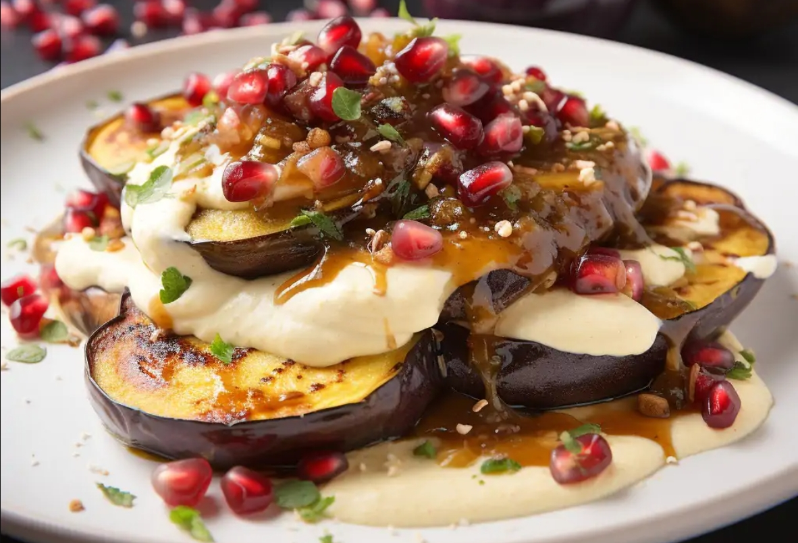

приготовление:
-
Разогреть духовку до 220°C. Застелить противень пергаментной бумагой.
Нарезать предварительно очищенные полосами баклажаны толщиной примерно 1 см.
Выложить кусочки на противень, смазать кисточкой оливковым маслом и немного посолить и поперчить с обеих сторон.
Запекать в середине духовки до золотистой корочки и полностью мягкой текстуры, примерно 30 минут. Можно перевернуть их посередине готовки. Если хочется румяности, добавить 5 минут с конвекцией в конце.
-
Для тминного йогурта очистить и размять в ступке 1 зубчик чеснока со щепоткой соли до пасты. Смешать чесночную пасту с 1 ч. л. молотого тмина и 200 г греческого йогурта до однородности.
-
Подавать запечённые баклажаны, полив йогуртной заправкой и посыпав зеленью.